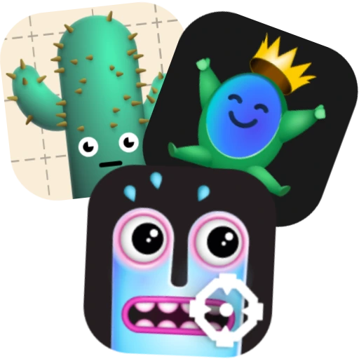
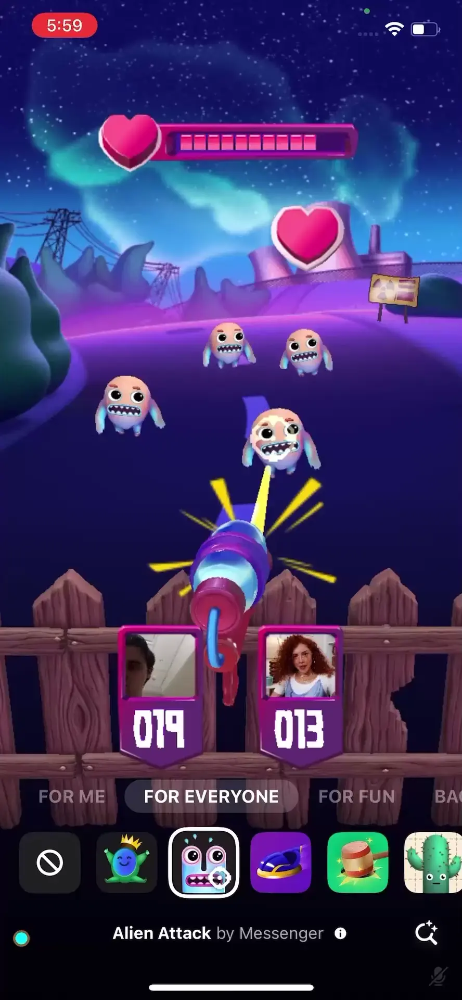

AR Games

AR Games for video calling are multiplayer experiences that cover a wide variety of genres. Some are competitive, such as the "Bumper Royale" game, and some are collaborative, such as the "Desert of Doom" game where callers need to guide each other through a dangerous sandstorm. Use the carousel below to explore each game and its gameplay mechanics.


Alien Attack
In this AR Game, callers work together to defend their fort from aliens by firing laser beams at them. As time goes on, stronger aliens arrive, making it harder and harder to keep them at bay. Callers are composed into the area at the bottom of the screen and each given a laser cannon, controlled by tapping on the screen.